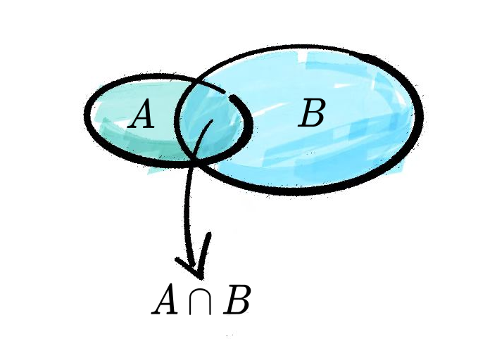
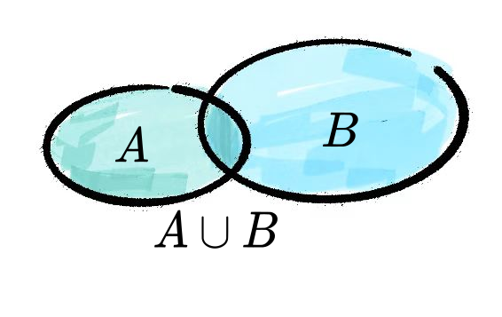
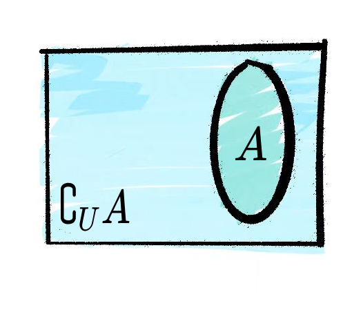
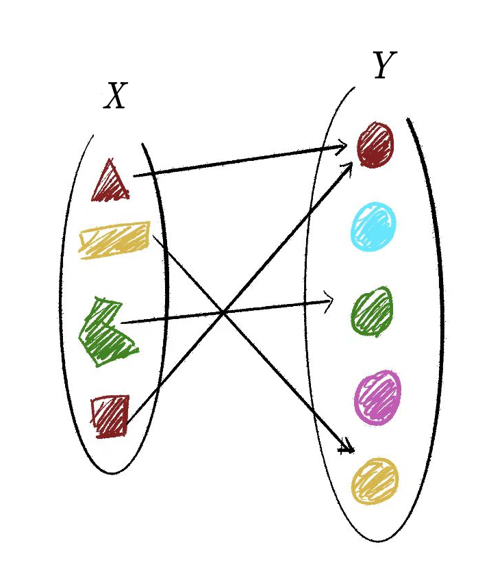
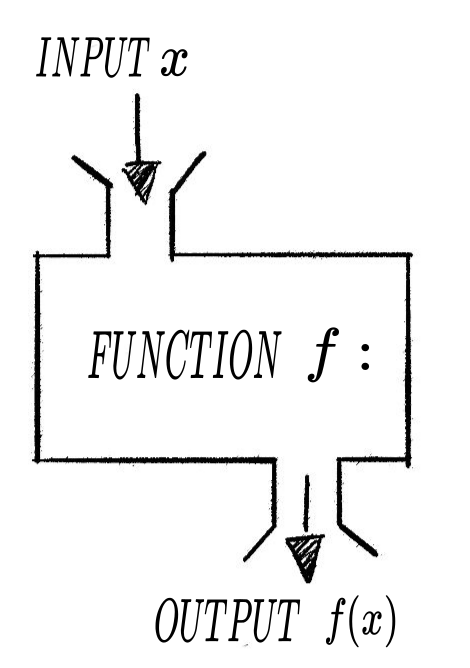
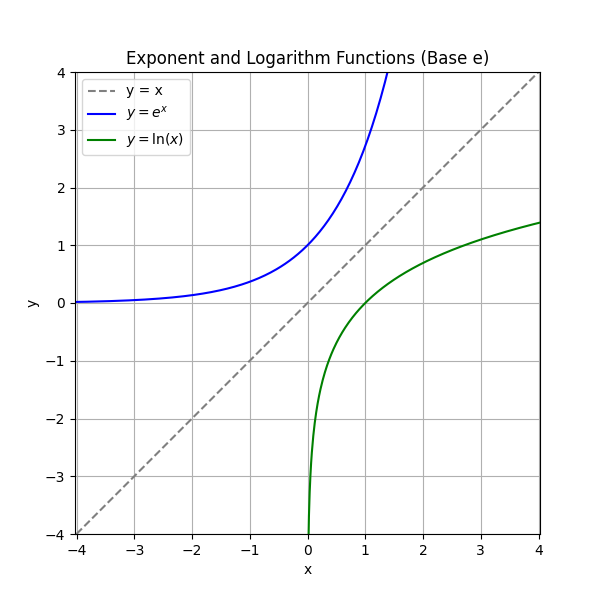
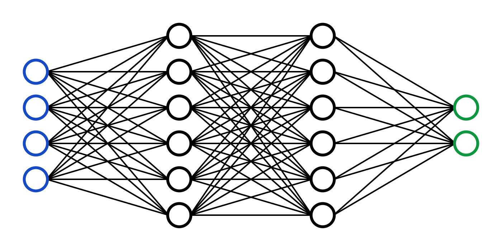
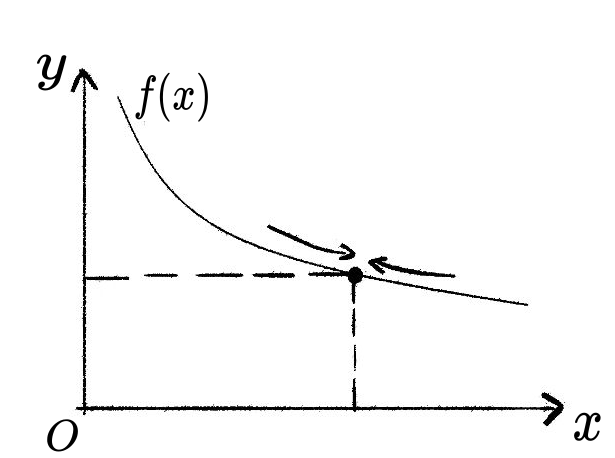
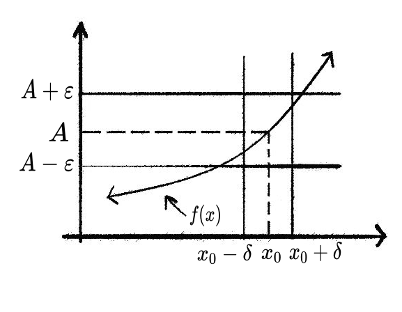
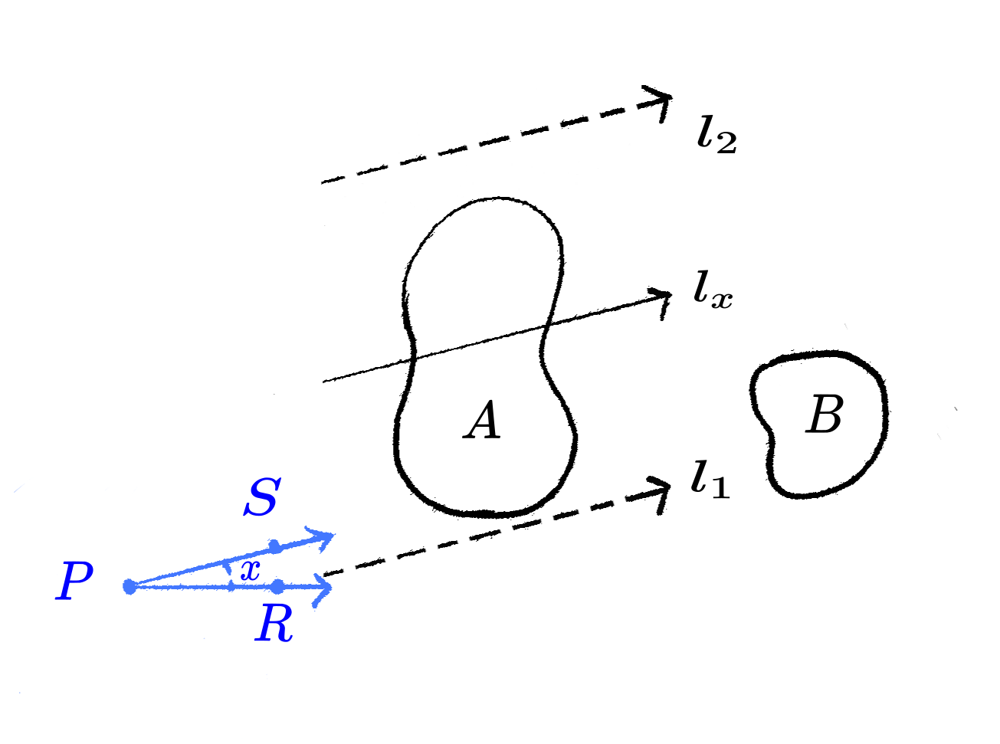

第一章: 极限
微积分是大学数学的核心内容, 是人工智能的基础之一, 学好它对我们以后的学习和成长有非常大的好处.
微积分的研究对象是函数. 我们中学已经学过函数的概念, 下面我们来复习和巩固一下.
1.1 集合与映射
1.1.1 集合
集合是数学研究从具体到抽象的第一步. 当我们用数学语言来描述世界时, 首先要把我们感兴趣的对象给拿出来, 进行适当的抽象, 然后再研究它们的规律. 集合就是数学中用来界定对象的一个概念.
自然数集— \mathbb{N} = \left\{0, 1, 2, 3, \cdots \right\}实数集— \mathbb{R} = \left\{x: -\infty < x < \infty \right\}满足不等式 x-3<10 的所有实数 x— A=\left \{x < 7\right \}
我们把所要研究的对象统称为元素 (element), 这些元素所组成的总体叫做集合 (set). 一般用大写字母如 A, B, C 表示集合, 用小写字母如 x 或 a, b, c 来表示集合中的元素.
- 如果 x 是集合 A 的元素, 就说 x 属于 集合 A , 记作 x\in A ;
- 如果 x 不是集合 A 中的元素, 就说 x 不属于 集合 A, 记作 a \notin A.
- 不包含任何元素的集合叫做 空集 (emptyset), 记为 $$.
计算机图像处理中经常会用到掩码 (mask) 的概念. 掩码本质上就是一个集合.
- set_mask.ipynb: 图像掩码操作.
如果集合 A 中任意一个元素都是集合 B 中的元素, 则称 A 包含于 B (或 B 包含A), 记作 A\subseteq B 或 B\supseteq A, 此时称 A 为 B 的 子集 (subset). 空集是任何集合的子集
- 集合相等: 如果 A\subseteq B, 同时 B\subseteq A, 则集合 A, B 中的元素是完全一样的, 此时我们说集合 A 等于集合 B, 记作A=B.
交集
所有既属于 A 又属于 B 的元素组成的集合称为 A 与 B 的 交集 (intersection set), 记作 A\cap B (读作“A 交 B”), 即
A\cap B=\left \{ x: x\in A \ \mathrm{and} \ x\in B \right \}
下图展示了交集运算:

并集
所有属于集合 A 或属于集合 B 的元素组成的集合, 称为集合 A 与 B 的 并集 (union set), 记作 A\cup B (读作“ A 并 B ”), 即
A\cup B=\left \{ x: x\in A \ \mathrm{or} \ x\in B \right \}
下图展示了并集运算:

补集
如果集合 A 是集合 B 的子集, 则所有 B 中不属于 A 的所有元素构成的集合称为 A 相对于 B 的 补集 (complementary set), 记作 C_BA 或 A^C, 即
\bar{A} = C_B A = \{x \in B: \ x\notin A\}
下图展示了补集运算:

- set_iou.ipynb: 交并比介绍.
1.1.2 映射
集合的概念是为了给映射做铺垫, 映射建立了集合与集合之间的关联.
映射 (map) 描述了从一个集合到另一个集合的某种对映关系. 设集合 A 和 集合 B 是两个集合, 如果存在一个对映关系 f, 使得集合 A 中的每个元素都唯一的对映到 B 中的一个元素, 则称 f 为从 A 到 B 的映射, 记作 f: A \rightarrow B
映射 f 把集合 A 中的元素 a 对映到 B 中的元素 b, 可记作 f(a) = b 此时 b 称为 a 的象, a 称为 b 的原象.
映射可以通过下面的图像来理解:

图中箭头表示了集合 A 中元素与集合 B 中元素的对映关系.
根据定义, 映射需要满足两个要求: 随处取值, 唯一对映.
- 随处取值是指 A 中的任何一个元素在 B 中都有对映；
- 唯一对映是指 f 可以把 A 中的不同元素映射到 B 中的同一个元素, 但不能把 A 中的一个元素映射到 B 中的多个元素.
- 单射：如果 A 中的每个元素都对映 B 中的不同元素, 则称 f 为单射.
- 满射：如果 B 中的每个元素都有原象, 则称 f 为满射.
- 一一映射：顾名思义, 一一映射就是集合 A 中元素与集合 B 中的元素一个对映一个. 可以证明, f 是一一映射等价于 f 既是单射又是满射.
逆映射
对于一一映射 f: A \rightarrow B, 把映射的象和原象反过来, 得到一个把集合 B 映射到集合 A 的新的映射, 称为逆映射, 记作 f^{-1}: B\rightarrow A.
映射的例子在我们的生活中随处可见, 例如：
- 名字：集合 A 是所有的人, 集合 B 是所有的名字. 每个人都有一个名字, 我们允许重名, 但不允许一个人有2个名字.
- 地图：没错, map 本身就是一个 map！(我们希望)这是一个从地图到真实世界的一一映射.
- 颜色：为什么我们能看到不同的颜色？颜色是一个从光波长到我们主观感受的映射.
从上面的例子可以感受到, 映射的作用在于把集合 A 中的元素作为输入信号, 例如如不同的人、GPS坐标、光的波长等, 经过某种操作, 转换成我们关心的输出, 如名字、位置和颜色. 从这个意义上理解, 映射就是就是把输入 x 转化成 f(x) 的一个机器.

1.1.3 函数
函数是一种特殊的映射: 从数集 A 到数集 B 的映射 f:A \rightarrow B 称为函数 (function). 函数可写成 y = f(x) 的形式, 其中 x 称为自变量, y 称为 x 对映的函数值.
数列是一类特殊的函数, 它把自然数集 \mathbb{N} 映射到实数集 \mathbb{R} 中, 这个函数可以记作 a(n), 不过更多的时候我们会把 n 作为下标, 以 a_n 表示数列得第 n 项, 并以 \{ a_n \} 表示整个数列.
等差数列
- 首项为 a_{1}, 公差为 d 的等差数列的通项公式为
a_{n} =a_{1} +(n-1)d
- 等差数列的前 n 项和为 \quad S_{n}=na_1+\frac{n(n-1)}{2}d
等比数列
首项为 a_{1} , 公比为 q 的等比数列的通项公式为 a_{n}=a_{1} q^{n-1}
等比数列的前 n 项和为 S_{n}=a_{1}\frac{1-q^n }{1-q} （q\ne 1)
- 幂函数: y=x^{\alpha}
- 指数函数: y=a^x, 特别的有 y=\mathrm{e}^x, 后者在 python 中有专门的函数 numpy.exp(x)
- 对数函数: y=\mathrm{log}_a^{x}, 特别的有 y=\mathrm{ln}^{x}, 后者在 python 中有专门的函数 numpy.log(x)
- 三角函数: y=\sin(x), y=\cos(x), y=\tan(x)
- 反三角函数: y = \mathrm{arcsin}(x)
其它常用函数
绝对值函数: y=|x|
符号函数 y=\mathrm{sgn}(x)=\left\{\begin{matrix} 1, & x>0& \\ 0, & x=0& \\ -1, & x<0& \end{matrix}\right.
Sigmoid函数 \sigma (x)=\frac{1}{1+e^{-x}}
反函数是逆映射的一个特例, 对于函数 f: x \rightarrow y (也要求 f 是一一映射), 其反函数为 f^{-1}: y \rightarrow x. 例如
- y = 3x + 1 的反函数为 \displaystyle y = \frac{x - 1}{3}
- y = \mathrm{e}^x 的反函数为 y = \mathrm{ln}x.
反函数本质上是把 x 和 y 的顺序对调了一下, 因此不难发现原函数与反函数的图像是关于直线 y = x 对称的.

对于函数 f 和 g, 我们可以构造一个新的函数 y = f[g(x)], 它把自变量 x 通过函数 g 映射到 u = g(x), 再把 u 视作自变量 (也称为中间变量) 通过函数 f 映射到 y = y = f[g(x)]. 这个过程可以表示为:
x \stackrel{g}{\longrightarrow} u \stackrel{f}{\longrightarrow} y.
我们把这个新函数 y = f[g(x)] 称为函数 f 和 g 的复合函数, 记作 f \circ g. 注意函数复合是讲顺序的, 一般来说 f\circ g \ne g\circ f.
假设 f(x) = x + 2，g(x) = x^2，计算复合函数 f\circ g 和 g\circ f。
将一个函数的输出代入另一个函数，注意复合的顺序：f\circ g 表示先作用 g 再作用 f。
\begin{align} f\circ g &= g(x) + 2 = x^2 + 2, \\ g\circ f &= [f(x)]^2 = (x+2)^2. \end{align}
计算机编程中的函数(function) 概念比数学中的函数要广, 它表示从输入 (可以是数、数组、函数等）到输出 (也可以是数、数组、函数等）的一系列操作.
深度学习与复合函数

人工智能中的核心技术为深度学习, 深度学习的背后其实就是有很多层 (从几十到几千层都有) 的神经网络 (Neuron Network). 神经网络的本质正是复合函数. 对于图中所示的神经网络, 从最左端的输入信号开始, 之后每一层都是上一层信号的复合, 因此神经网络就是一个复合了很多次的函数, 这个函数把输入 (比如一张图片) 映射到我们关心的结果 (比如图像是猫还是狗的概率).
上机实验
- set_mnist.ipynb: 手写数字识别演示.
1.2 极限
极限是微积分中的核心概念. 极限的出现代表了数学思想的一次转变, 而促成这一转变的动机来自于现实问题中对曲线相关问题的需求. 在初等数学中我们会计算矩形的周长和面积, 会计算三角形的周长和面积, 甚至是任意多边形的周长和面积, 但是, 这些都是由直线构成的结构, 而到了曲线大家就不会了. 曲线的长度怎么算? 由曲线构成区域的面积怎么算? 尽管我们初中就知道圆的周长是 2\pi r, 面积是 \pi r^2, 但是为什么是这样, 只有运用微积分才能给出严格的证明.
极限的概念很直观, 但经过数学的严格化后会变得非常抽象. 可以说极限的公理化是一道门槛, 是我们从中学的初等数学迈向大学的高等数学的必经之路. 要学好极限并不容易, 这里面涉及从有限到无穷的观念转变. 我们会发现这条路一开始会辗转反复, 让人晕头转向, 但是当你学完这门课程再回头来看, 会发现这么做是值得的, 数学概念的严格化其实不是在追求外表的精美, 而是让我们的内心变得更加的强大, 使我们有力量走得更远. 那么, 我们深呼吸一下, 一起敲开通向高等数学的大门吧.
1.2.1 数列极限
圆的面积怎么算? 为了计算圆的面积, 我们构造了一系列圆的内接正多边形, 这些正多边形的面积是可以通过初等数学计算的, 我们把它们的面积记作 A_n, n = 1, 2, \cdots. 通过直觉我们能感受到, 当 n 趋于无穷大时, A_n 的面积会无限接近圆的面积. 接下来我们要做的就是把这个直觉通过数学语言给严格化.
- limit_array_circle.ipynb: 圆面积的极限.
极限是一个动中取静的过程.
什么在动? 数列 \{ A_n \} 中的指标 n 在动.
什么是静? 圆面积是静, A_n 的取值会慢慢趋于稳定, 到最后几乎不变了, 数学上我们称这种行为叫收敛.
一尺之捶, 日取其半 (版本1)
站在棒子的角度, 这个过程可以用一个数列描述. n 代表天数, a_n 代表杠剩下的长度.
\begin{align*} a_0 &= 1, \\ a_1 &= \frac{1}{2}, \\ a_2 &= \frac{1}{4}, \\ & \cdots \\ a_n & = \frac{1}{2^n}, \\ & \cdots \end{align*}
随着 n 的增加 (动), a_n 的值不断靠近0 (静), 直觉告诉我们当 n 区域无穷大时 a_n 的极限是0.
一尺之捶, 日取其半 (版本2)
站在砍棒人的角度, 这个过程也可以用一个数列描述. n 代表天数, b_n 代表到第 n 天为止所取的棒子的总数.
\begin{align*} b_0 &= 0, \\ b_1 &= \frac{1}{2}, \\ b_2 &= \frac{1}{2} + \frac{1}{4} = \frac{3}{4}, \\ & \cdots \\ b_n & = \frac{1}{2} + \frac{1}{4} + \cdots + \frac{1}{2^n} = 1 - \frac{1}{2^n}, \\ & \cdots \end{align*}
随着 n 的增加 (动), b_n 的值不断靠近1 (静), 直觉告诉我们当 n 区域无穷大时 b_n 的极限是1.
P21 例1
a_n = \frac{n + (-1)^{n-1}}{n}
随着 n 的增加 (动), a_n 的值不断靠近1 (静), 直觉告诉我们当 n 区域无穷大时 a_n 的极限是1.
P22 例2
a_n = \frac{(-1)^{n}}{(n+1)^2}, \\
随着 n 的增加 (动), a_n 的值不断靠近0 (静), 直觉告诉我们当 n 区域无穷大时 a_n 的极限是0.
判断数列 a_n = (-1)^{n+1} = \{1, -1, 1, -1, \cdots\} 是否收敛，并说明理由。
观察数列各项的取值规律，判断其能否趋近于某个固定值（“静”下来）。
数列 a_n = (-1)^{n+1} 不收敛（发散）。
数列在 1 和 -1 之间不断交替振荡，无法趋近于任何固定的数。
严格地说，假设极限为 A，则对 \varepsilon = \dfrac{1}{2}，存在 N 使得当 n > N 时 |a_n - A| < \dfrac{1}{2}。但奇数项 a_{2k-1} = 1 与偶数项 a_{2k} = -1 均出现在任意 N 之后，于是
2 = |1 - (-1)| \leq |1 - A| + |A - (-1)| < \frac{1}{2} + \frac{1}{2} = 1,
矛盾。故数列发散。
判断数列 a_n = n = \{1, 2, 3, 4, \cdots\} 是否收敛，并说明理由。
观察数列各项是否有界，无界数列必然发散。
数列 a_n = n 不收敛（发散至正无穷）。
数列不断增长，无法趋近于任何有限的固定值，因此”静”不下来。
严格地说，若极限为 A，则对 \varepsilon = 1，存在 N 使得当 n > N 时 |n - A| < 1，即 A - 1 < n < A + 1。但 n 可以任意大，当 n > A + 1 时不等式不成立，矛盾。故数列发散。
更简洁地，有界数列才可能收敛，而 \{n\} 无界，因此发散。
==数列极限的定义== (非常重要!!!)
设 \{a_n\} 为一数列, A 为一常数, 如果对于任意给定的正数 \varepsilon, 总存在正整数 N, 使得当 n>N 时有
|a_n - A| < \varepsilon,
则称 A 为数列 \{a_n\} 的极限, 记作 \lim_{n\rightarrow \infty} a_n = A.
定义背后的数学直觉: 所以数列 \{a_n\} 有极限就是, 当 n 足够大时, a_n 的值无限接近某个数 A. 上述定义把数列极限的直觉具象化了, 从而使得直觉变得可操作了. 根据定义, 我们现在可以严格的判断前面例子中数列的极限.
直觉: \displaystyle a_n = \frac{1}{2^n} 的极限为0.
证明: 对于任意给定的 \varepsilon > 0, 要找到 N 使得 | \frac{1}{2^N} - 0 | = \frac{1}{2^N} < \varepsilon
取 \displaystyle N = \left[ \frac{-\mathrm{ln} \varepsilon}{\mathrm{ln} 2} \right] + 1, 可知当 n > N 时, 总有 |a_n - 0| < \varepsilon. 因此 \displaystyle \lim_{n \rightarrow \infty} a_n = 0.
一尺之捶, 日取其半 (版本2)
直觉: \displaystyle b_n = 1 - \frac{1}{2^n} 的极限为1.
证明: 对于任意给定的 \varepsilon > 0, 要找到 N 使得 |1 - \frac{1}{2^N} - 1| = \frac{1}{2^N} < \varepsilon
取 \displaystyle N = \left[ \frac{-\mathrm{ln} \varepsilon}{\mathrm{ln} 2} \right] + 1, 可知当 n > N 时, 总有 |b_n - 1| < \varepsilon. 因此 \displaystyle \lim_{n \rightarrow \infty} b_n = 1.
直觉: \displaystyle a_n = \frac{n + (-1)^{n-1}}{n} 的极限为1.
证明: 对于任意给定的 \varepsilon > 0, 要找到 N 使得 \left|\frac{n + (-1)^{n-1}}{n} - 1\right| = \frac{1}{n}< \varepsilon
取 $N = + 1 $, 可知当 n > N 时, 总有 |a_n - 1| < \varepsilon. 因此 \displaystyle \lim_{n \rightarrow \infty} a_n = 1.
直觉: \displaystyle a_n = \frac{(-1)^n}{(n+1)^2} 的极限为0.
证明: 对于任意给定的 \varepsilon > 0, 要找到 N 使得 \left| \frac{(-1)^n}{(n+1)^2} - 0\right| = \frac{1}{(n+1)^2}< \varepsilon
取 $N = $, 可知当 n > N 时, 总有 |a_n - 0| < \varepsilon. 因此 \displaystyle \lim_{n \rightarrow \infty} a_n = 0.
- 如果数列 a_n 有极限, 那么它的极限唯一.
- 如果数列 a_n 有极限, 那么数列 a_n 一定有界.
- 如果 \displaystyle \lim_{n\rightarrow \infty} a_n = A, 且 A > 0, 那么存在正整数 N, 当 n > N 时有 x_n > 0.
- 如果 \displaystyle \lim_{n\rightarrow \infty} a_n = A, 那么 a_n 的任一子数列的极限也是 A.
- 任意改变数列的有限多项, 不影响极限的收敛.
1.2.2 函数极限
函数极限跟数列极限本质上都是极限, 都是动中取静, 只不过数列极限中动的是 n, 而函数极限中动的是自变量 x. 之前我们强调过函数图像的重要性, 函数的极限过程同样可以通过函数图像来理解. 下面这张图可以作为我们对函数极限的直觉, 图中展示了 \displaystyle \lim_{x\rightarrow 2} f(x) = 4, 请大家想想在这个极限过程中什么在动, 什么是静?

两个函数极限的例子:
- limit_fun_sin_over_x.ipynb
- limit_fun_sin_1_x.ipynb
==函数极限的定义== (非常重要!!!)
设函数 \{f(x)\} 在点 x_0 的某一去心领域内有定义 ( 为了让 x 能够动起来), A 为一常数. 如果对于任意给定的正数 \varepsilon, 总存在正数 \delta, 使得当 0 < |x-x_0| < \delta 时有 |f(x) - A| < \varepsilon,
则称 A 为函数 \{f(x)\} 在 x_0 的极限, 记作 \lim_{x\rightarrow x_0} f(x) = A.
上述定义可以通过下图来理解

所以函数 \{f(x)\} 在 x\rightarrow x_0 时有极限就是, 当 x 足够接近 x_0 时, f(x) 的值无限接近某个数 A. 注意跟数列极限进行对比. 跟数列极限的定义一样, 上面关于函数极限的定义提供了一个可操作的流程, 能够将我们关于函数极限的直观具象化.
用 \varepsilon-\delta 语言证明 \displaystyle\lim_{x \to 2}(5x+1) = 11。
估计 |f(x) - 11|，将其化为含 |x-2| 的形式，再令其小于 \varepsilon 来确定 \delta。
证明： 由于
\begin{align*} |f(x) - 11| &= |(5x + 1) - 11| \\ &= 5|x - 2| < \varepsilon \end{align*}
为了使 5|x - 2| < \varepsilon，只要 \displaystyle |x - 2| < \frac{\varepsilon}{5}。
取 \displaystyle \delta = \frac{\varepsilon}{5}，可知当 0 < |x - 2| < \delta 时，总有 \displaystyle |f(x) - 11| < \varepsilon，从而
\lim_{x \rightarrow 2} f(x) = 11.
用 \varepsilon-\delta 语言证明 \displaystyle\lim_{x \to 1}(2x - 1) = 1。
估计 |f(x) - 1|，化为含 |x-1| 的形式，再确定满足条件的 \delta。
证： 由于
|f(x) - A| = |(2x - 1) - 1| = 2|x - 1|
为了使 \displaystyle |f(x) - A| < \varepsilon，只要
|x - 1| < \frac{\varepsilon}{2}
所以，\forall \varepsilon > 0，可取 \displaystyle \delta = \frac{\varepsilon}{2}，则当 x 适合不等式
0 < |x - 1| < \delta
时，对应的函数值 f(x) 就满足不等式
|f(x) - 1| = |(2x - 1) - 1| < \varepsilon
从而
\lim\limits_{x \to 1}(2x - 1) = 1
用 \varepsilon-\delta 语言证明 \displaystyle\lim_{x \to 2}(x^2 + 1) = 5。
将 |f(x)-5| 分解为 |x-2||x+2|，先限制 \delta_0=1 给 |x+2| 一个上界，再用两者的最小值确定 \delta。
证明： 对于任意给定的 \varepsilon > 0，要找到 \delta 使得只要 0 < |x-2|< \delta，总有
\begin{align*} \left|f(x) - 5\right| &= \left| x^2+1 - 5\right| \\ &= \left| x^2 - 4\right| \\ &= \left| x - 2\right| \left| x + 2\right|. \end{align*}
为了把 \left|x+2\right| 用常数束缚住，取 \delta_0 = 1。当 |x-2|<\delta_0 时，1<x<3，因此
|x+2|<5.
所以在 |x-2|<1 的情况下有
|f(x)-5| = |x-2||x+2| < 5|x-2|.
现在给定任意 \varepsilon>0，令
\delta = \min\left\{1,\frac{\varepsilon}{5}\right\}.
若 0<|x-2|<\delta，则同时有 |x-2|<1（从而 |x+2|<5）且 |x-2|<\varepsilon/5。因此
|f(x)-5| < 5|x-2| < 5\cdot\frac{\varepsilon}{5} = \varepsilon.
因此对任意 \varepsilon>0 存在上述 \delta>0 使得 0<|x-2|<\delta 蕴含 |f(x)-5|<\varepsilon，于是
\displaystyle \lim_{x\to2} (x^2+1)=5.
- 如果 \displaystyle \lim_{x\rightarrow x_0}f(x) 存在, 则极限唯一.
- 如果 \displaystyle \lim_{x\rightarrow x_0}f(x) = A, 则 f(x) 在 x_0 周围有界, 即存在 M >0 和 \delta > 0, 使得当 0< |x-x_0|<\delta 时 |f(x)| < M .
- 如果 \displaystyle \lim_{x\rightarrow x_0}f(x) = A > 0, 则 f(x) 在 x_0 周围一定大于0, 即存在 \delta > 0, 使得当 0< |x-x_0|<\delta 时 f(x) > 0.
本章的主要内容是数列极限和函数极限的定义,
在数学上我们也把这套定义极限的方法称为 \varepsilon-N 语言 (数列) 或 \varepsilon-\delta 语言 (函数).
这样的定义看似繁缛, 但只有这样才能把极限的本质说清楚.
初学者不要怕麻烦, 做题时应该一字一句的把极限的定义写清楚.
怕麻烦不想写字的同学, 在熟练掌握了极限的定义之后,
可以使用两个约定的缩写符号:
- \forall: 对于任意
- \exist: 存在
使用这两个符号, 数列极限和函数极限的定义可以写成下面的形式 (仅仅是少几个字而已).
数列极限的定义
\displaystyle \lim_{n\rightarrow \infty} a_n = A \iff \forall \varepsilon > 0, \exist N, s. t., \ |a_n - A| < \varepsilon if n > N.
函数极限的定义
\displaystyle \lim_{x\rightarrow x_0} f(x) = A \iff \forall \varepsilon > 0, \exist \delta, s. t., |f(x) - A| < \varepsilon if 0 < |x-x_0| < \delta.
我们有时候会说一个数列或函数趋于无穷大, 也会写 \displaystyle \lim_{n\rightarrow \infty} a_n = \infty 或 \displaystyle \lim_{x\rightarrow x_0} f(x) = \infty, 请注意, 这只是一种习惯上的说法, 并不是真正意义上的 (有限的) 极限. 尽管如此, 我们可以借用类似 \varepsilon-N 语言的做法来从数学上定义什么叫趋于无穷大, 例如:
数列趋于无穷大
\displaystyle \lim_{n\rightarrow \infty} a_n = \infty \iff \forall M > 0, \exist N, s. t., |a_n| > M if n > N.
函数趋于无穷大
\displaystyle \lim_{x\rightarrow x_0} f(x) = \infty \iff \forall M > 0, \exist \delta, s. t., |f(x)| > M if 0 < |x-x_0| < \delta.
1.2.3 极限的运算
这一讲我们主要关心如何计算极限.
- 对于一些简单的极限计算, 每次都用直觉和 \varepsilon-\delta 语言来计算极限太繁琐, 也没有必要. 很多时候极限的四则运算能够帮上大忙.
- 有一些困难的极限问题, 我们需要跟强大的数学结论和工具, 本讲介绍的三明治定理和单调有界数列有极限请收好.
注意, 本讲的性质和定理全部都建立在上一讲极限定义的基础之上, 其根本还是 \varepsilon-\delta 语言.
极限运算涉及到了无限的概念, 对初学者来说这是一个之前从未踏足过的位置领域, 一些有限世界中的直觉将不再成立. 希尔伯特的旅店是一个有趣的故事, 通过这个故事希望能让大家对无限有一颗敬畏之心.
加减法: 如果 \displaystyle \lim_{n\rightarrow \infty}a_n = A, \displaystyle \lim_{n\rightarrow \infty}b_n = B, 则 \displaystyle \lim_{n\rightarrow \infty}[a_n \pm b_n]= A \pm B.
乘法: 如果 \displaystyle \lim_{n\rightarrow \infty}a_n = A, \displaystyle \lim_{n\rightarrow \infty}b_n = B, 则 \displaystyle \lim_{n\rightarrow \infty}a_nb_n = AB.
除法: 如果 \displaystyle \lim_{n\rightarrow \infty}a_n= A, \displaystyle \lim_{n\rightarrow \infty}b_n = B, 且 B \ne 0, 则 \displaystyle \lim_{n\rightarrow \infty}\frac{a_n}{b_n}= \frac{A}{B}.
证明见教学视频或问DeepSeek.
加减法: 如果 \displaystyle \lim_{x\rightarrow x_0}f(x) = A, \displaystyle \lim_{x\rightarrow x_0}g(x) = B, 则 \displaystyle \lim_{x\rightarrow x_0}[f(x) \pm g(x)]= A \pm B.
乘法: 如果 \displaystyle \lim_{x\rightarrow x_0}f(x) = A, \displaystyle \lim_{x\rightarrow x_0}g(x) = B, 则 \displaystyle \lim_{x\rightarrow x_0}f(x)g(x)= AB.
除法: 如果 \displaystyle \lim_{x\rightarrow x_0}f(x) = A, \displaystyle \lim_{x\rightarrow x_0}g(x) = B, 且 B \ne 0, 则 \displaystyle \lim_{x\rightarrow x_0}\frac{f(x)}{g(x)}= \frac{A}{B}.
证明见教学视频或问DeepSeek.
用 \varepsilon-N 定义证明 \displaystyle \lim_{n\rightarrow \infty}\frac{1}{n}=0。
从 \left|\dfrac{1}{n} - 0\right| < \varepsilon 出发，解出 n 的条件，进而确定 N 的取法。
对任意给定的 \varepsilon > 0，需要找到正整数 N，使得当 n > N 时：
\left| \frac{1}{n} - 0 \right| = \frac{1}{n} < \varepsilon.
解不等式 \dfrac{1}{n} < \varepsilon 得 n > \dfrac{1}{\varepsilon}。
取 N = \left\lfloor \dfrac{1}{\varepsilon} \right\rfloor + 1（即大于 \dfrac{1}{\varepsilon} 的最小正整数），则当 n > N 时，必有 \dfrac{1}{n} < \varepsilon。
故 \displaystyle \lim_{n\rightarrow \infty}\frac{1}{n}=0。
计算 \displaystyle \lim_{n\rightarrow \infty}\frac{1}{2n}。
利用极限的数乘性质，将问题归结为已知的 \lim_{n\to\infty}\frac{1}{n}=0。
由极限的数乘性质及 \displaystyle \lim_{n\rightarrow \infty}\frac{1}{n}=0，得：
\lim_{n\rightarrow \infty}\frac{1}{2n} = \frac{1}{2} \cdot \lim_{n\rightarrow \infty}\frac{1}{n} = \frac{1}{2} \cdot 0 = 0.
直接用 \varepsilon-N 定义，解出 n 需满足的条件，给出 N 的取法。
对任意 \varepsilon > 0，需找到 N 使得当 n > N 时：
\left| \frac{1}{2n} - 0 \right| = \frac{1}{2n} < \varepsilon.
解不等式得 n > \dfrac{1}{2\varepsilon}，取 N = \left\lfloor \dfrac{1}{2\varepsilon} \right\rfloor + 1，则当 n > N 时必满足 \dfrac{1}{2n} < \varepsilon。
故极限为 0。
计算 \displaystyle \lim_{n\rightarrow \infty}\frac{1}{n^2}。
用 \varepsilon-N 定义，从 \dfrac{1}{n^2} < \varepsilon 解出对 n 的要求，进而确定 N。
对任意 \varepsilon > 0，需找到 N 使得当 n > N 时：
\left| \frac{1}{n^2} - 0 \right| = \frac{1}{n^2} < \varepsilon.
解不等式得 n > \dfrac{1}{\sqrt{\varepsilon}}，取 N = \left\lfloor \dfrac{1}{\sqrt{\varepsilon}} \right\rfloor + 1，则当 n > N 时必有 \dfrac{1}{n^2} < \varepsilon。
故 \displaystyle \lim_{n\rightarrow \infty}\frac{1}{n^2} = 0。
计算 \displaystyle \lim_{x\rightarrow 1}(2x-1)。
f(x) = 2x-1 是多项式函数，在 x=1 处连续，可直接代入。
由于 f(x) = 2x - 1 是多项式，在 x=1 处连续，直接代入得：
\lim_{x\rightarrow 1}(2x-1) = 2(1) - 1 = 1.
用 \varepsilon-\delta 定义，从 |(2x-1)-1| < \varepsilon 反推出 \delta 的取法。
对任意 \varepsilon > 0，需找到 \delta > 0 使得当 0 < |x-1| < \delta 时：
|(2x-1) - 1| = 2|x-1| < \varepsilon.
取 \delta = \dfrac{\varepsilon}{2}，则当 0 < |x-1| < \delta 时：
2|x-1| < 2 \cdot \frac{\varepsilon}{2} = \varepsilon.
故 \displaystyle \lim_{x\rightarrow 1}(2x-1) = 1。
计算 \displaystyle \lim_{x\rightarrow 2}\frac{x^3-1}{x^2-5x+3}。
验证分母在 x=2 处不为零，若不为零则可直接代入。
分子在 x=2 处的值：2^3 - 1 = 7。
分母在 x=2 处的值：2^2 - 5(2) + 3 = 4 - 10 + 3 = -3 \neq 0。
因分母不为零，由极限的四则运算法则可直接代入：
\lim_{x\rightarrow 2}\frac{x^3-1}{x^2-5x+3} = \frac{7}{-3} = -\frac{7}{3}.
计算 \displaystyle \lim_{x\rightarrow 3}\frac{x-3}{x^2-9}。
直接代入得 \dfrac{0}{0} 型不定式，先对分母进行因式分解，约去公因式后再求极限。
直接代入 x=3 得分子分母均为 0，是 \dfrac{0}{0} 型不定式，需进一步处理。
对分母因式分解：
x^2 - 9 = (x-3)(x+3).
在 x \neq 3 时约去公因式 (x-3)：
\frac{x-3}{x^2-9} = \frac{x-3}{(x-3)(x+3)} = \frac{1}{x+3}.
计算简化后的极限：
\lim_{x\rightarrow 3}\frac{x-3}{x^2-9} = \lim_{x\rightarrow 3}\frac{1}{x+3} = \frac{1}{3+3} = \frac{1}{6}.
1.2.4 两个重要的极限
还记得”割圆法”求圆面积的例子吗? 圆的内接正 n 边形的面积当 n \rightarrow \infty 的极限的计算最后就会落到极限 \displaystyle \lim_{x\rightarrow 0} \frac{\sin x}{x} 的计算, 这个极限与圆周率 \pi (阿基米德数)有着深刻的联系.
定理陈述：
设函数 f(x), g(x), h(x) 在点
x_0 的某去心邻域内满足：
- g(x) \leq f(x) \leq h(x)
- \displaystyle \lim_{x\to x_0} g(x) = \lim_{x\to x_0} h(x) = L, 则 \displaystyle \lim_{x\to x_0} f(x) = L.
数列版本：
若数列 \{a_n\}, \{b_n\}, \{c_n\}
满足：
1. b_n \leq a_n \leq
c_n（对充分大的 n）
2. \displaystyle \lim_{n\to\infty} b_n =
\lim_{n\to\infty} c_n = L, 则 \displaystyle \lim_{n\to\infty} a_n =
L.
\boxed{\displaystyle \lim_{x\rightarrow 0} \frac{\sin x}{x} = 1}
证明: 首先考虑 x>0 的情形. 我们从几何出发, 把 x 看作是单位圆上的一小段弧度, 注意到
- \sin x 为对边长度
- x 为圆弧长度（弧度制）
- \tan x 为切线长度
通过几何上观察可知
\sin x < x < \tan x
同时除以 \sin x 并取倒数得
\cos x < \frac{\sin x}{x} < 1, \quad x>0
对于 x < 0 的情况, 利用奇函数性质：
\frac{\sin(-x)}{-x} = \frac{\sin x}{x}
因此同样有
\cos x < \frac{\sin x}{x} < 1, \quad x < 0 注意到 \lim_{x \to 0} \cos x = 1
应用三明治定理, 得
\lim_{x \to 0} \frac{\sin x}{x} = 1.
极限 \displaystyle \lim_{n\rightarrow \infty} \left(1+\frac{1}{n}\right)^{n} 与无理数 \mathrm{e} (欧拉数)有密切的联系. Jacob Bernoulli 于1683年在研究复利的时候考虑过这个数列的极限.
雅各布·伯努利与数e的发现
- limit_array_e.ipynb: 函数极限的例子.
\boxed{\lim_{n\rightarrow \infty} \left(1+\frac{1}{n}\right)^{n} = \mathrm{e}}
证明见教学视频或问DeepSeek.
\boxed{\lim_{x\rightarrow 0} \left(1+x\right)^{\frac{1}{x}} = \mathrm{e}}
可以证明
\mathrm{e} = 1 + \frac{1}{1!} + \frac{1}{2!} + \cdots + \frac{1}{n!} + \cdots
证明的方法也是用单调有界数列有极限.
中学学过导数的同学可以算一下展开式
\mathrm{e}^x = 1 + \frac{x}{1!} + \frac{x^2}{2!} + \cdots + \frac{x^n}{n!} + \cdots
的导数, 看看会发现什么有趣的现象?
1.2.5 复合函数的极限
下面的结论相当于极限运算中的换元法, 在计算极限的时候十分有用.
假设 y=f[g(x)], \displaystyle \lim_{x\rightarrow x_0}g(x) = u_0, \displaystyle \lim_{u\rightarrow u_0}f(x) = A, 则 \displaystyle \lim_{x\rightarrow x_0}f[g(x)] = A.
这个结论请自行根据直觉理解, 证明略.
计算 \displaystyle \lim_{x\rightarrow 0}\frac{\tan x}{x}。
将 \tan x 拆成 \dfrac{\sin x}{x} \cdot \dfrac{1}{\cos x}，利用重要极限 \lim_{x\to 0}\dfrac{\sin x}{x}=1 及极限的乘法法则。
\lim_{x \rightarrow 0} \frac{\tan x}{x} = \lim_{x \rightarrow 0} \left( \frac{\sin x}{x} \cdot \frac{1}{\cos x} \right) = \left( \lim_{x \rightarrow 0} \frac{\sin x}{x} \right) \cdot \left( \lim_{x \rightarrow 0} \frac{1}{\cos x} \right) = 1 \cdot 1 = 1.
计算 \displaystyle \lim_{x\rightarrow 0}\frac{1-\cos x}{x^2}。
利用半角公式 1 - \cos x = 2\sin^2\!\dfrac{x}{2}，或将分子改写为含 \sin x 的形式，再结合重要极限拆分计算。
利用恒等式 1 - \cos x = 2\sin^2\!\dfrac{x}{2} 不是唯一方法；这里用 1-\cos x = \dfrac{\sin^2 x}{1+\cos x}：
\lim_{x \rightarrow 0} \frac{1 - \cos x}{x^{2}} = \lim_{x \rightarrow 0} \frac{\sin^{2}x}{x^{2}(1 + \cos x)} = \lim_{x \rightarrow 0} \left( \frac{\sin x}{x} \right)^{2} \cdot \lim_{x \rightarrow 0} \frac{1}{1 + \cos x} = 1^2 \cdot \frac{1}{2} = \frac{1}{2}.
计算 \displaystyle \lim_{x\rightarrow 0}\frac{\arcsin x}{x}。
令 t = \arcsin x，则 x = \sin t，当 x \to 0 时 t \to 0，用复合函数极限换元法将问题转化为重要极限。
令 t = \arcsin x，则 x = \sin t。当 x \to 0 时，有 t \to 0。
由复合函数的极限运算法则：
\lim_{x \to 0} \frac{\arcsin x}{x} = \lim_{t \to 0} \frac{t}{\sin t} = \frac{1}{\displaystyle\lim_{t \to 0} \frac{\sin t}{t}} = \frac{1}{1} = 1.
计算 \displaystyle \lim_{x\rightarrow \infty}\left( 1-\frac{1}{x}\right)^{x}。
令 t = -x，当 x \to \infty 时 t \to -\infty，将表达式化为含 \left(1+\dfrac{1}{t}\right)^t 的形式，利用重要极限 \lim_{t\to\infty}\left(1+\dfrac{1}{t}\right)^t = \mathrm{e}。
令 t = -x，则当 x \to \infty 时，t \to -\infty，且
\left(1 - \frac{1}{x}\right)^x = \left(1 + \frac{1}{t}\right)^{-t} = \frac{1}{\left(1 + \frac{1}{t}\right)^{t}}.
由重要极限，当 t \to -\infty 时 \left(1+\dfrac{1}{t}\right)^t \to \mathrm{e}（该极限对 t \to \pm\infty 均成立），故
\lim_{x \to \infty} \left( 1 - \frac{1}{x} \right)^{x} = \lim_{t \to -\infty} \frac{1}{\left( 1 + \frac{1}{t} \right)^{t}} = \frac{1}{\mathrm{e}} = \mathrm{e}^{-1}.
计算 \displaystyle \lim_{x\rightarrow 0}\frac{\tan 2x}{\sin 5x}。
将分子和分母分别乘以各自的”参数”，凑出 \dfrac{\tan u}{u} \to 1 和 \dfrac{\sin v}{v} \to 1 的形式，再利用极限的乘除法则。
将极限改写，凑出标准形式：
\lim_{x\rightarrow 0}\frac{\tan 2x}{\sin 5x} = \lim_{x\rightarrow 0} \frac{\tan 2x}{2x} \cdot \frac{5x}{\sin 5x} \cdot \frac{2x}{5x}.
令 u = 2x，当 x \to 0 时 u \to 0，由重要极限知 \displaystyle\lim_{u\to 0}\frac{\tan u}{u} = 1；
令 v = 5x，当 x \to 0 时 v \to 0，由重要极限知 \displaystyle\lim_{v\to 0}\frac{\sin v}{v} = 1。
故
\lim_{x\rightarrow 0}\frac{\tan 2x}{\sin 5x} = 1 \cdot 1 \cdot \frac{2}{5} = \frac{2}{5}.
1.3 连续函数
1.3.1 连续和间断
所谓连续函数, 直白的说就是能笔不离开纸面一气画出来的函数, 下面我们就来运用极限的概念把这个连续的直观给数学化.
函数在某一点的连续
若 \displaystyle \lim_{x\rightarrow x_0}f(x) = f(x_0), 则称 f(x) 在 x_0 处连续.
连续函数
如果函数在某个区域上每一点都连续, 则称 f(x) 是该区域上的连续函数.
讨论函数 f(x) = |x| 的连续性。
分 x_0 > 0、x_0 < 0、x_0 = 0 三种情况，验证各点处 \lim_{x\to x_0}f(x) = f(x_0) 成立。
函数 f(x) = |x| 在 (-\infty, +\infty) 上处处连续。
- 当 x_0 > 0 时，在 x_0 的某邻域内 f(x) = x，故 \lim_{x\to x_0}|x| = x_0 = f(x_0)，连续。
- 当 x_0 < 0 时，在 x_0 的某邻域内 f(x) = -x，故 \lim_{x\to x_0}|x| = -x_0 = f(x_0)，连续。
- 当 x_0 = 0 时，左极限 \lim_{x\to 0^-}|x| = \lim_{x\to 0^-}(-x) = 0，右极限 \lim_{x\to 0^+}|x| = \lim_{x\to 0^+}x = 0，且 f(0)=0，故连续。
因此 f(x) = |x| 在 (-\infty, +\infty) 上连续。
讨论函数 \displaystyle f(x) = \frac{1}{|x|} 的连续性，指出间断点（若有）。
分析 f(x) 的定义域，找出使 f(x) 无定义的点，再检验该点处的极限行为。
f(x) = \dfrac{1}{|x|} 在 x = 0 处无定义，因此 x=0 是间断点。
- 当 x_0 \neq 0 时，|x| 在 x_0 附近连续且非零，故 f(x) = \dfrac{1}{|x|} 在所有 x_0 \neq 0 处连续。
- 当 x \to 0 时，|x| \to 0^+，故 \dfrac{1}{|x|} \to +\infty，极限不存在（趋于无穷大）。
因此，f(x) 在 (-\infty, 0) \cup (0, +\infty) 上连续，在 x = 0 处不连续（第二类间断点，无穷间断点）。
不连续的函数就是间断函数. 间断函数一定有某处是不连续的, 造成不连续的原因很多, 其中有些间断点还能够被挽救回来变成连续的 (可去间断点), 有些则挽救不回来.
讨论函数 \displaystyle f(x) = \frac{\sin x}{x} 的连续性。若存在间断点，判断其类型，并说明能否通过补充定义使其成为连续函数。
f(x) 在 x=0 处没有定义，但计算 \lim_{x\to 0}\dfrac{\sin x}{x} 可以判断该间断点是否可去。
f(x) = \dfrac{\sin x}{x} 在 x=0 处无定义，故 x=0 是间断点。
由重要极限：
\lim_{x\rightarrow 0} \frac{\sin x}{x} = 1.
由于极限存在但函数在该点无定义，x=0 是可去间断点。
只要令 f(0) = 1，即补充定义
\tilde{f}(x) = \begin{cases} \dfrac{\sin x}{x}, & x \neq 0, \\ 1, & x = 0, \end{cases}
则 \tilde{f}(x) 在 (-\infty, +\infty) 上处处连续。
讨论函数 f(x) = \sin\dfrac{1}{x} 在 x=0 处的连续性。若不连续，判断间断点类型，并说明能否通过补充定义使其连续。
考察 x \to 0 时 \sin\dfrac{1}{x} 的极限行为：取特殊数列 x_n \to 0 使得 \sin\dfrac{1}{x_n} 取不同值，说明极限不存在。
f(x) = \sin\dfrac{1}{x} 在 x=0 处无定义，故 x=0 是间断点。
当 x \to 0 时，\dfrac{1}{x} \to \infty，\sin\dfrac{1}{x} 在 -1 和 1 之间无限振荡，极限不存在。
例如，取 x_n = \dfrac{1}{n\pi}，则 \sin\dfrac{1}{x_n} = \sin(n\pi) = 0；取 x_n = \dfrac{2}{(4n+1)\pi}，则 \sin\dfrac{1}{x_n} = 1。
因此 x=0 是振荡间断点（第二类间断点），无法通过补充定义一个点值使 f(x) 在 x=0 处连续。
- 左连续(注意极限记号下方的 - 号)
\displaystyle \lim_{x\rightarrow x_0^-} f(x) = A \iff \forall \varepsilon > 0, \exist \delta>0, s. t., |f(x) - A| < \varepsilon if -\delta < x-x_0 < 0.
- 右连续(注意极限记号下方的 + 号)
\displaystyle \lim_{x\rightarrow x_0^+} f(x) = A \iff \forall \varepsilon > 0, \exist \delta>0, s. t., |f(x) - A| < \varepsilon if 0 < x-x_0 < \delta.
造成函数 f(x) 在 x=x_0 处的极限不存在的一个常见原因是 f(x) 的左右极限不相等.
\mathrm{sgn}(x) = \begin{cases} 1, & \text{if $x>0$}, \\ 0, & \text{if $x=0$}, \\ -1, & \text{if $x<0$}. \end{cases} 该函数在 x_0=0 处不连续, 造成不连续的原因是函数在该点的左极限 (x 从左往右趋于0) 等于 -1, 右极限 (x 从右往左趋于0) 等于 1, 左右极限不相等. 这种情况也没有办法通过简单的修改 f(0) 的值来让函数连续.
函数的连续性是一个很自然的性质, 我们所感受到的世界就是连续的: 物体运动的轨迹, 温度的变化, 甚至计算机里的0-1也是用连续函数来近似的. - 在做目标追踪问题的时候, 连续是一个很重要的先验; - 在求解物理方程的时候, 解的连续性是一个很重要的约束; - 在人工智能里, 连续性是解决高维问题的一个核心底层逻辑.
1.3.2 闭区间上连续函数的性质
闭区间上的连续函数是函数中的乖宝宝, 因为这类函数的值总是可以被控制住.
如果函数 f(x) 在 (a, b) 内连续, 在 a 处右连续, 在 b 处左连续, 则 f(x) 是闭区间 [a, b] 上的连续函数.
闭区间 [a, b] 上的连续函数有界, 且至少有一点 x_1 \in [a, b] 使得 f(x_1) 是 f(x) 在 [a, b] 上的最大值, 也至少有一点 x_2 \in [a, b] 使得 f(x_2) 是 f(x) 在 [a, b] 上的最小值.
函数 f(x) = \dfrac{1}{x} 是否在闭区间 [-1, 1] 上连续？若不连续，说明原因，并说明维尔斯特拉斯极值定理是否适用。
检验 f(x) 在 [-1,1] 上的定义域，找出不连续的点，再讨论极值定理的适用条件。
f(x) = \dfrac{1}{x} 在 x=0 处无定义，因此 f(x) 在闭区间 [-1,1] 上不连续（甚至无法在全区间上取值）。
由于 f(x) 不满足维尔斯特拉斯极值定理的条件（函数须在闭区间上处处连续），定理不适用。
实际上，当 x \to 0 时，|f(x)| = \dfrac{1}{|x|} \to +\infty，函数在 [-1,1] 上无界，既无最大值也无最小值，这正是定理不成立的反例。
符号函数 \mathrm{sgn}(x) = \begin{cases} 1, & x>0, \\ 0, & x=0, \\ -1, & x<0 \end{cases} 是否在闭区间 [-1, 1] 上连续？若不连续，说明原因，并说明维尔斯特拉斯极值定理是否适用。
检验 \mathrm{sgn}(x) 在 x=0 处的左右极限是否相等。
\mathrm{sgn}(x) 在 x=0 处不连续：
\lim_{x \to 0^-} \mathrm{sgn}(x) = -1, \qquad \lim_{x \to 0^+} \mathrm{sgn}(x) = 1.
左右极限不相等，故极限不存在，x=0 是跳跃间断点（第一类间断点）。
由于 \mathrm{sgn}(x) 在 [-1,1] 上不连续，维尔斯特拉斯极值定理的条件不满足，定理不适用。
注意：尽管如此，\mathrm{sgn}(x) 在 [-1,1] 上实际上是有界的（值域为 \{-1, 0, 1\}），且最大值和最小值均存在，这说明定理的条件是充分条件而非必要条件。
设闭区间 [a, b] 上的连续函数 f(x) 在端点的值分别为 f(a) < 0, f(b) > 0, 则一定存在 x_0 \in [a, b] 使得 f(x_0) = 0.
证明方程 x^3 - 4x^2 + 1 = 0 在区间 (0, 1) 内至少有一个根。
构造函数 f(x) = x^3 - 4x^2 + 1，计算其在区间端点的值，利用介值定理（布尔查诺定理）得出结论。
令 f(x) = x^3 - 4x^2 + 1。
f(x) 是多项式，在闭区间 [0, 1] 上连续。
计算端点处的值：
f(0) = 0 - 0 + 1 = 1 > 0,
f(1) = 1 - 4 + 1 = -2 < 0.
由于 f(0) > 0，f(1) < 0，f 在 [0,1] 上连续，根据介值定理（布尔查诺定理），在区间 (0, 1) 内存在 c 使得 f(c) = 0。
此即方程 x^3 - 4x^2 + 1 = 0 在区间 (0, 1) 内的一个根。
布尔查诺定理时一个存在性定理, 它只告诉我们一个东西有还是没有, 与之相对的是所谓的构造性定理, 后者会给出找出这个东西的具体办法. 存在性定理和构造性定理都是数学的重要组成部分, 按照一般的理解, 前者在纯数学中的地位更高, 后者则一般更受工程师和程序员的青睐.
为了让大家体会存在性定理的奇妙之处, 下面我们用布尔查诺定理来证明一个看起来并不明显的命题(摘自库朗所著的《什么是数学》一书). 命题如下: 如果 A 和 B 是平面内的任意两个区域, 那么在平面内一定存在一条直线, 该直线同时平分 A 和 B. (注：所谓一个”区域”, 是指平面内一条简单闭曲线所包围的部分.)

证明：
先在平面上选择某一固定点 P, 并且从 P 引出一条射线 PR 当作度量角度的始边. 如果作与 PR 的夹角为 x 的任一射线 PS, 那么在平面上会有一条与 PS 同方向且 平分区域 A 的有向直线.
因为, 如果我们作一条与 PS 同方向的有向直线 l_1, 但它整个在 A 的一侧, 然后平行地移动这条直线, 直到直线处在位置 l_2, 那么由区域 A 在直线右侧（如果直线指北, 则东向是右侧）的面积减去 A 在直线左侧的面积所定义的函数, 其值对 l_1 是负的, 对 l_2 是正的. 因为这个函数是连续的, 由布尔查诺定理, 必有某个中间位置 l_x, 使它为零, 也就是 l_x 平分了 A. 因此, 对于 x 由 x = 0^\circ 到 x = 360^\circ 的每个值 x, 平分 A 的直线 l_x 都是唯一确定的.
现在把函数 y = f(x) 定义为 B 在直线 l_x 右侧面积减去 B 在 l_x 左侧的面积. 假设直线 l_0 与 PR 同方向且平分了 A, 并且 B 在 l_0 右侧的面积大于左侧, 则对 x = 0^\circ, y 是正的. 如果 x 增加到 180^\circ, 那么直线 l_{180} 和 RP 平行, 它虽然和 l_0 一样地分割 A, 但与 l_0 方向相反, 右和左互换, 因此 y 在 x = 180^\circ 时和在 x = 0^\circ 时的数值相同, 但符号相反, 所以是负的. 当 l_x 旋转时, y 是 x 的连续函数, 那么在 0^\circ 和 180^\circ 之间, 存在 x 的某个值 \alpha, 使 y 等于零.
因此方向线 l_\alpha 同时平分 A 和 B, 证明完毕.